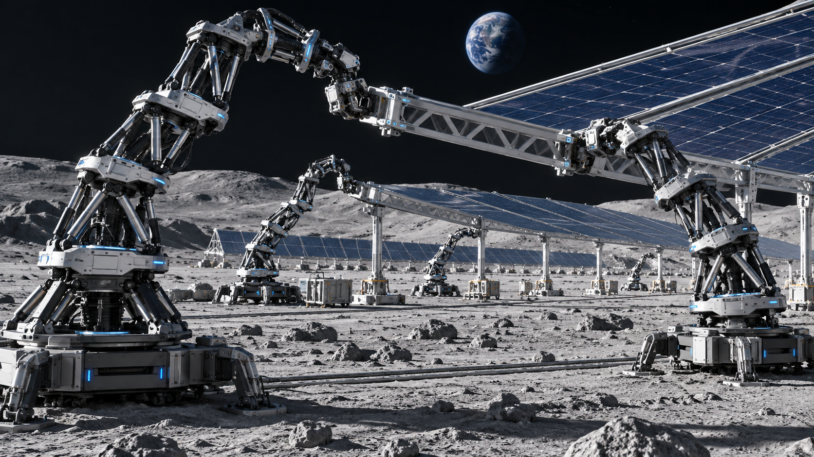
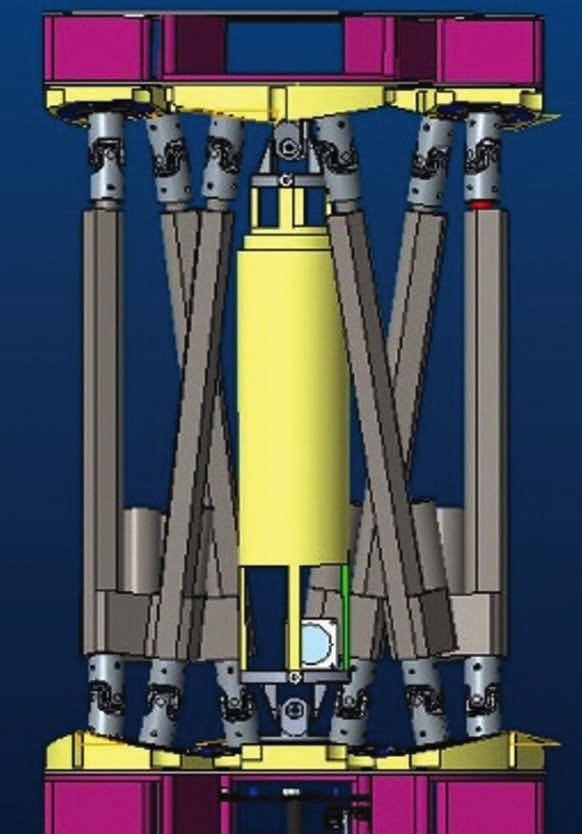

Reconfigure.
Then reach further.
Combine modules into shorter or longer robot arms. Adapt the configuration as the structure—and the task—changes.
MODULAR ARCHITECTUREYour next project.
Beyond the limits of human access.
A new vision for remote construction: robot teams that adapt to the structure, tackle the hard-to-reach, and keep people connected from a distance.
Discover the platform ↗Join the mailing listA fixed robot configuration can limit what comes next. Assemblers stack and reconfigure modular units into the team the job needs.
Combine modules into shorter or longer robot arms. Adapt the configuration as the structure—and the task—changes.
MODULAR ARCHITECTUREDesigned for autonomous operation or human oversight, including environments where continuous teleoperation is impractical.
FLEXIBLE OVERSIGHTThe control system can hold a failed module in its last pose and redistribute work across the remaining Assemblers.
FAULT-RESILIENT CONTROLOriginally developed for space assembly. A platform to explore for construction and industry here on Earth.

Assemble solar arrays, habitats, antennae, and support structures in orbit or on the lunar surface.
NASA-IDENTIFIED APPLICATIONExplore modular robotic assembly for construction sites where access is difficult and on-site human exposure is costly.
PROPOSED COMMERCIAL DIRECTIONInvestigate reconfigurable robot teams for industrial assembly as structures, reach, and production needs evolve.
NASA-IDENTIFIED APPLICATIONApplication images illustrate the commercial vision. They are concept visualizations, not deployed systems.

Each module is a Stewart platform: two plates linked by six extending actuators. Stacked together, they create an arm that can position and orient its tool in three-dimensional space.
Task management estimates the robot count, module configuration, and voltage needed.
Motion planning, sensor fusion, and joint control coordinate each robot’s actions.
Tools enable gripping, lifting, and joining. The system is designed to assess construction and correct assembly errors.
Prototype developed. Commercial potential ahead. NASA has demonstrated hardware and supporting simulations. Remote construction is a proposed commercial application; site-specific capabilities and performance require validation.